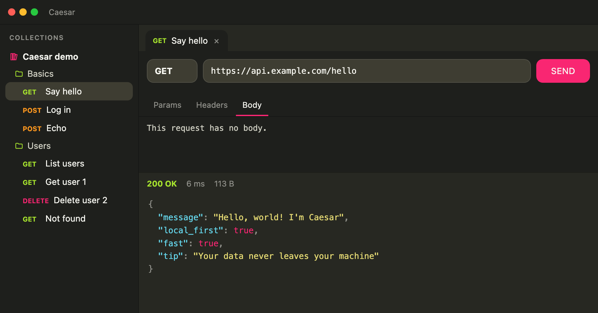

Local-first. Blazing fast.
Your API client lives on your machine: it starts instantly, works offline and your collections never leave your computer unless you want them to.

Built to go fast
Download Caesar
Free. Pick your system and the latest version starts downloading.
Prefer a .deb for Ubuntu/Debian?
macOS is signed and notarized with Apple. Windows and Linux builds are not code-signed yet, so on Windows SmartScreen may appear the first time (More info, then Run anyway). See the download page, how to verify the file and the code signing policy.
Security and privacy
- The UI never makes network requests: everything goes through Rust. Rust validates URLs, only allows http/https and limits response sizes.
- Caesar Sync (optional): AES-256-GCM encryption on your machine; the data key is stored only in the OS keychain.
- No telemetry, no analytics and no tracking cookies.
- If you lose all your devices and the recovery key, encrypted data cannot be recovered: that is the price of nobody else being able to read it.
Frequently asked questions
What is Caesar?
A fast, open source (MIT) desktop REST API client built with Tauri v2, Rust and React to send and test HTTP requests.
How do I import my Postman or Insomnia collections?
From inside the app you can import Postman, Insomnia (YAML and JSON v4/v5) and HAR collections, and export them again.
Can I paste a cURL command?
Yes. Paste the curl command into the URL bar and Caesar builds the request.
Is Caesar free and open source?
Yes: it is free and the code is on GitHub under the MIT license.
Do I need an account?
No. Guest mode works without an account and keeps data only on your device. The account and Caesar Sync are optional.
How does Caesar Sync encryption work?
Data is encrypted on your machine with AES-256-GCM before upload. The key never leaves your machine, so the server only sees encrypted blocks.
Does it collect telemetry or analytics?
No. Caesar ships no telemetry or analytics.
Which systems does it run on?
Windows, macOS (Intel and Apple Silicon) and Linux (.deb and AppImage).